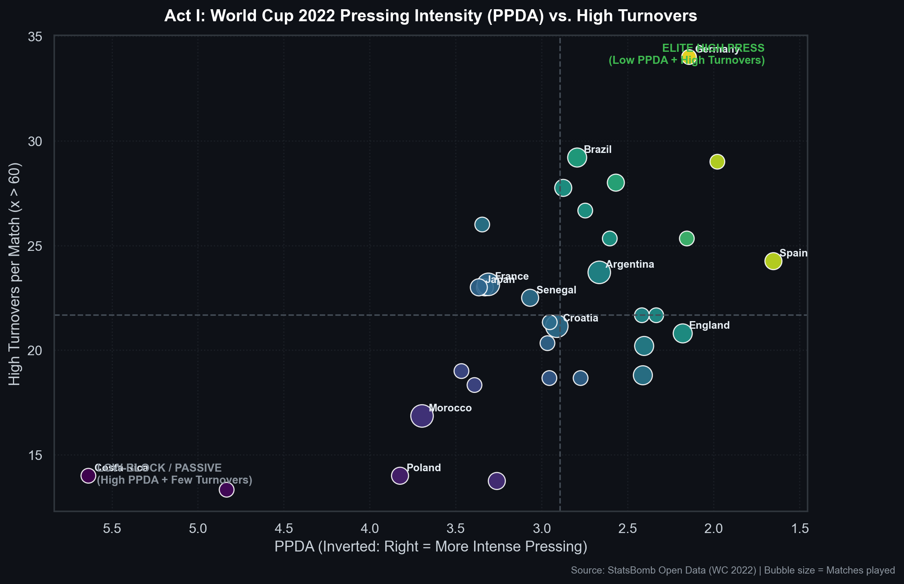
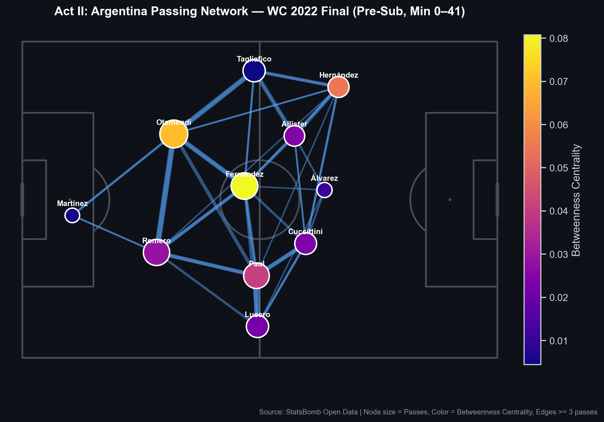

Why Does Raw Effort Not Equal Tactical Control?
Every major tournament produces the same post-match paradox: a team presses relentlessly for 90 minutes, racks up 65% possession, and still walks off the pitch eliminated. Raw event counts hide structural efficiency.
Across Phase 2 of the 100 Days of Data & Sports Challenge, we investigated 64 World Cup 2022 matches (234,652 events) from three complementary angles: how teams disrupt opponents without the ball (Act I), how they organize progression with the ball (Act II), and how individual players occupy tactical roles inside those systems (Act III).
Pressing Intensity vs. High Turnovers: The Volume Paradox
Counting raw Pressure events is misleading because a team defending its own box accumulates pressures simply by chasing the ball. To measure proactive pressing, we paired Passes Allowed per Defensive Action (PPDA) in the opponent's build-up zone (x < 72) with High Turnovers per match (ball recoveries and interceptions above x > 60).

Figure 1: Tournament-wide Pressing Quadrant across all 32 national teams. Lower PPDA (right) indicates fewer opponent passes allowed per defensive action; higher vertical position indicates more high turnovers forced per match.
Spain (1.65 PPDA, 24.25 high turnovers/match) and Germany (2.14 PPDA, 34.00 high turnovers/match) dominated the upper-right elite pressing quadrant, while Mexico (1.98 PPDA, 29.00 high turnovers/match) also pressed aggressively. Yet neither Spain nor Germany reached the quarterfinals. Pressing creates chaos and territory, but without vertical box penetration once the ball is won, elite pressing alone does not convert control into goals.
Methodologically, filtering out set-piece restarts and normalizing defensive actions by the opponent's build-up volume prevents low-block teams from looking artificially passive or hyper-active due to scoreline effects.
Passing Networks: How Argentina Structured the Final
Once possession is recovered, how does a champion organize its circulation? Using NetworkX, we modeled completed open-play passes before the first substitution (Minutes 0 to 41) in the 2022 World Cup Final as a directed weighted graph, measuring each player's Betweenness Centrality (how often they act as a structural bridge between teammates).

Figure 2: Argentina's pre-substitution passing network against France (Minutes 0 to 41). Node size scales with completed passes, color encodes Betweenness Centrality, and edge thickness reflects pass volume (minimum 3 passes shown).
Rather than funneling every build-up pass through Lionel Messi, Argentina built a balanced central spine: Enzo Fernandez (0.081 centrality, 40 passes) and Nicolas Otamendi (0.070, 44 passes) anchored progression from deep, while Rodrigo De Paul (0.041, 37 passes) balanced the right half-space and Angel Di Maria (0.055, 25 passes) stretched France's right flank into lethal 1v1 isolation.
Truncating the graph at the first substitution (Minute 41) is essential for tactical validity: once new personnel enter, average coordinates shift and blur the coach's starting structural blueprint.
Clustering the Tactical Universe: GMM, PCA & HDBSCAN
Nominal positions on a team sheet ("Midfielder", "Forward") hide massive stylistic differences. By normalizing per-90 progressive passing, carries, pressures, and xG contribution, then applying PCA, Gaussian Mixture Models (GMM), and HDBSCAN density clustering, we mapped players into functional tactical archetypes and isolated statistical "Unicorns" whose hybrid profiles defy standard labels.
Using soft probabilistic assignments from GMM alongside HDBSCAN's noise-aware clustering lets recruitment analysts distinguish true multi-role hybrids (such as Luka Modric or Kylian Mbappe) from players who merely sit near an arbitrary boundary.

Figure 3: 2D PCA projection of World Cup 2022 player styles, separating deep tempo-setters, overlapping fullbacks, box poachers, and multi-dimensional outliers.
Tactical Takeaways & Honest Limitations
- System + Hub + Profile must align: Elite teams pair proactive pressing traps (Act I) with distributed passing hubs (Act II) and complementary player archetypes (Act III).
- From EDA to Phase 3 Modeling: Every engineered signal here (PPDA, network centrality, and cluster embeddings) feeds directly into our upcoming predictive models for match outcomes and expected threat.
- Event-stream blind spots: StatsBomb event logs capture on-ball actions accurately, but they cannot observe off-ball decoy runs, defensive cover shadows, or pitch control between passes.
- Sample-size variance: Knock-out tournament data spans 3 to 7 matches per team, so single-match game states (such as trailing early) can skew raw PPDA and pass-share numbers.